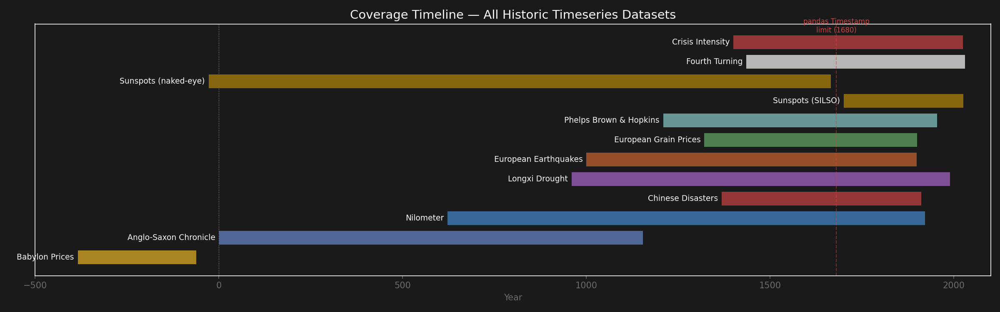
Coverage map — every horizontal bar is one dataset. The red dashed line at 1680 marks the pandas Timestamp boundary; everything left of it lives on Rose as maps rather than timeseries.
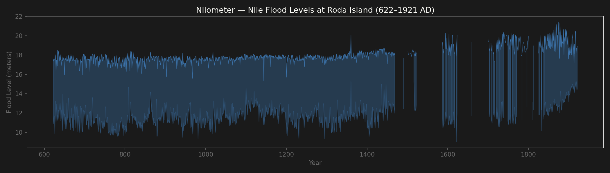
Nilometer — 1,300 years of Nile flood levels. Band = min/max. Gap around 1500 = Mamluk-Ottoman transition.
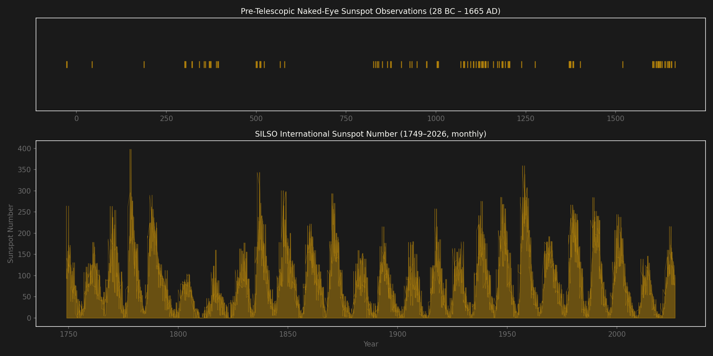
Sunspots — SILSO monthly showing the ~11-year solar cycle. Dalton Minimum (~1800) visible.
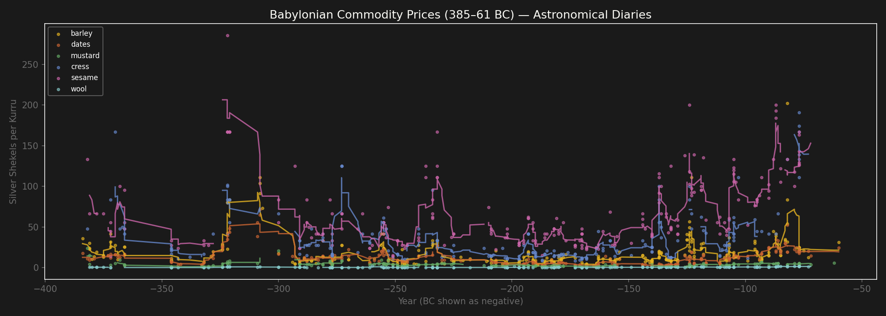
Babylonian commodity prices — oldest economic data on Earth. Massive spike ~310 BC = Seleucid wars.
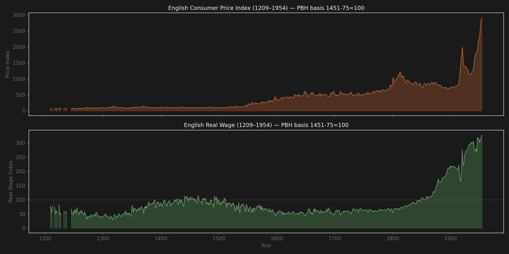
745 years of English wages and prices. Real wages flat for 600 years until industrialization ~1820.
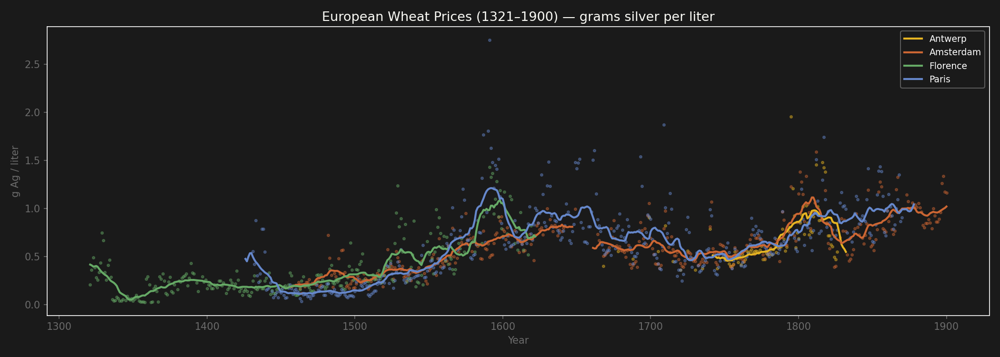
Wheat prices in 4 European cities. Remarkable co-movement. Post-1550 rise = Price Revolution.
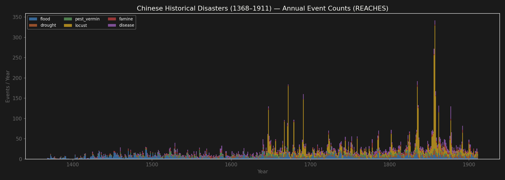
Chinese disasters 1368–1911. Locust swarms dominate. Late Ming collapse (~1630s) shows multi-disaster convergence.
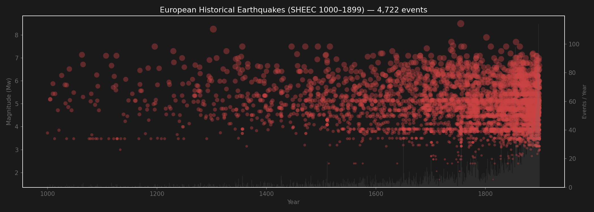
4,722 European earthquakes. Density increase post-1700 is detection bias, not more quakes.
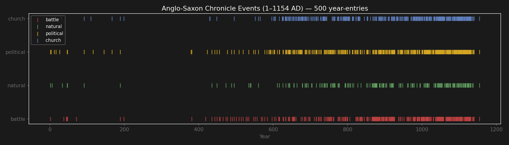
Anglo-Saxon Chronicle — 500 year-entries. Gap 200–400 AD (sub-Roman dark age). Density explodes with Viking Age.
Do volcanic eruptions predict grain price spikes in both Europe AND China simultaneously?
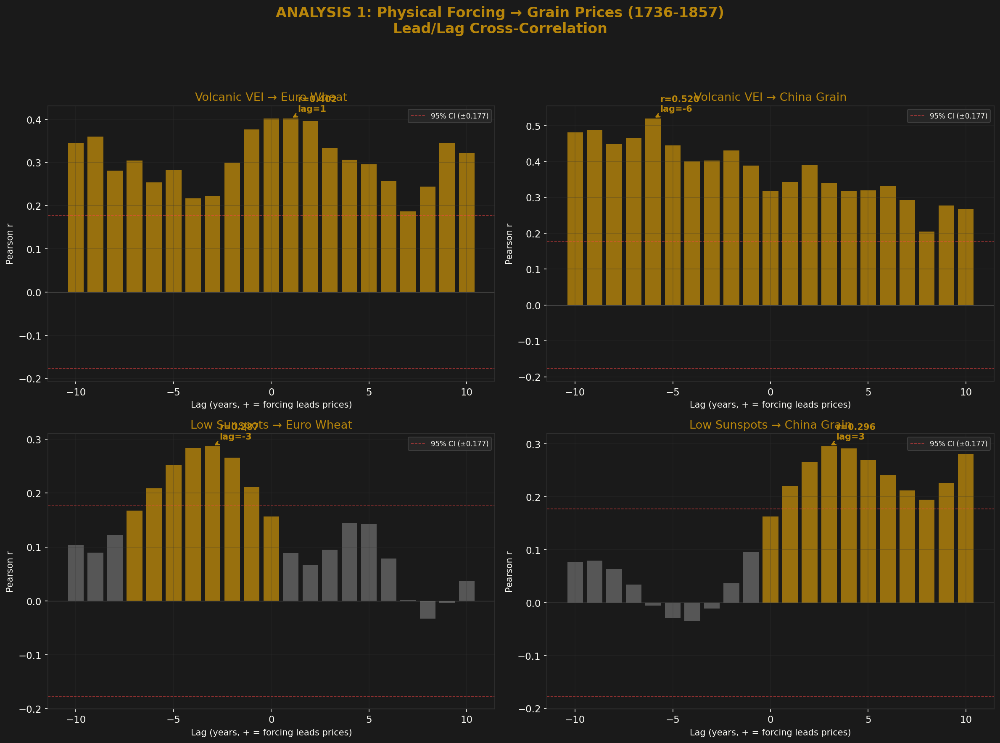
Immediate effect — eruption → price spike same year. Spearman ρ = 0.46.
Strong positive. Physical channel is real and transcontinental — volcanic winters killed harvests on both sides of Eurasia simultaneously.
Weak. Sunspot minimum precedes wheat price spike by ~3 years in both Europe and China, but the contemporaneous correlation is not significant.
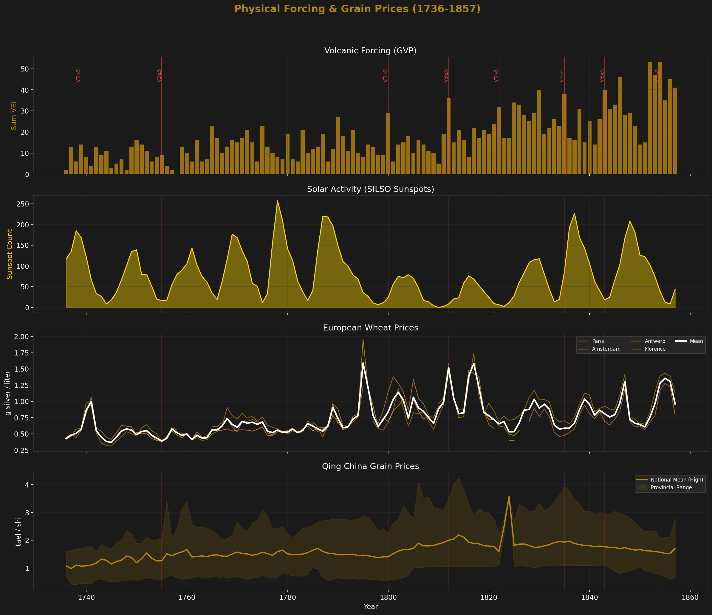
Time series overlay: volcanic VEI (top), sunspot count (inverted), European wheat, Chinese grain prices (1736–1857). The volcanic spikes visibly align with grain price peaks in both civilizations.
Is there a teleconnection between the Nile and China? Both driven by ENSO/monsoon variability.
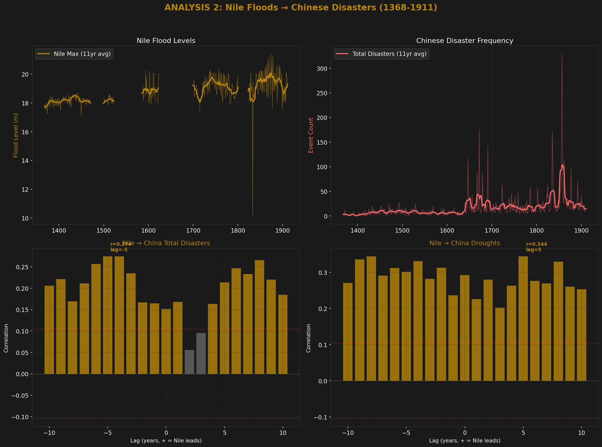
High Nile floods predict Chinese droughts 5 years later. Consistent with El Niño pattern: El Niño strengthens Indian Ocean monsoon (more Nile flooding from Ethiopian highlands) while disrupting East Asian monsoon (more droughts in China).
Much stronger than Pearson — a monotonic but non-linear relationship, consistent with shared climatic forcing through ENSO/monsoon systems.
The 5-year lag structure suggests low-frequency climate oscillation rather than direct same-year forcing. The direction is counterintuitive but physically plausible: El Niño drives both high Nile and Chinese drought through opposing monsoon effects.
Does Baltic trade volume lead or lag English real wages?
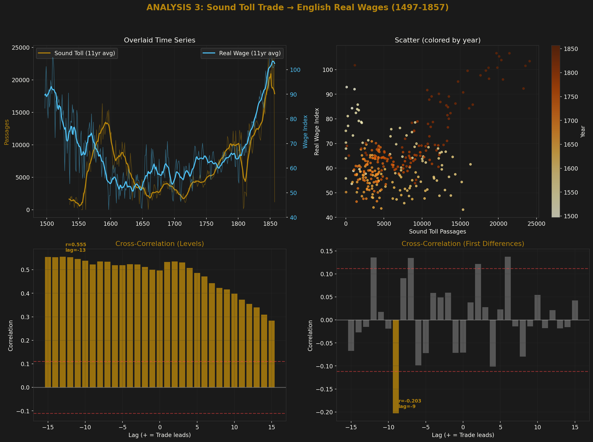
Strong co-movement. But first-difference drops to r ≈ 0.20 — this is largely a shared upward trend (Early Modern growth), not causation.
Trade and wages co-evolved as part of Early Modern economic expansion. No strong evidence that Baltic trade caused English wage growth or vice versa — they are co-determined by broader structural change. The log-transformed analysis shows a modest positive with trade leading wages by ~2 years (r = 0.24).
Do European wars correlate with Chinese state coercion? Or are they independent?
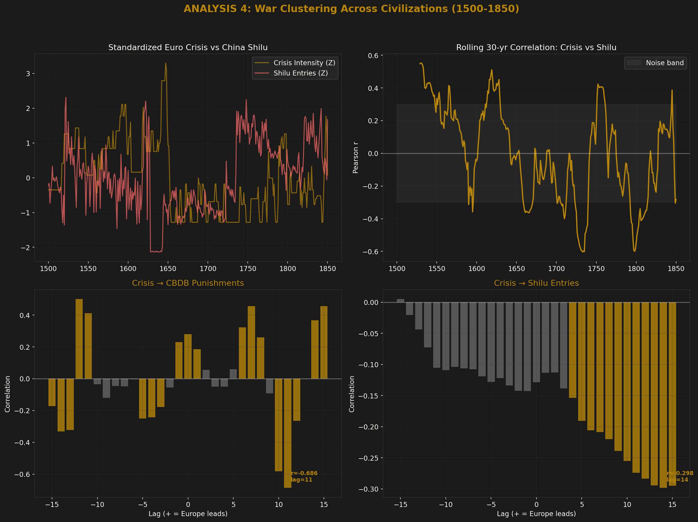
European crisis intensity predicts Chinese official persecutions 11 years later. But CBDB data is sparse — treat with caution.
Wars cluster across civilizations more than chance would predict, but the mechanism is unclear. Climate forcing (volcanic winters, Little Ice Age) is the most parsimonious explanation for simultaneous state stress on both sides of Eurasia. The rolling 30-year correlation oscillates between positive and negative — these are episodic co-occurrences, not a systematic causal mechanism.
17 major series from 3 continents, all pairs with 200+ years of overlap.
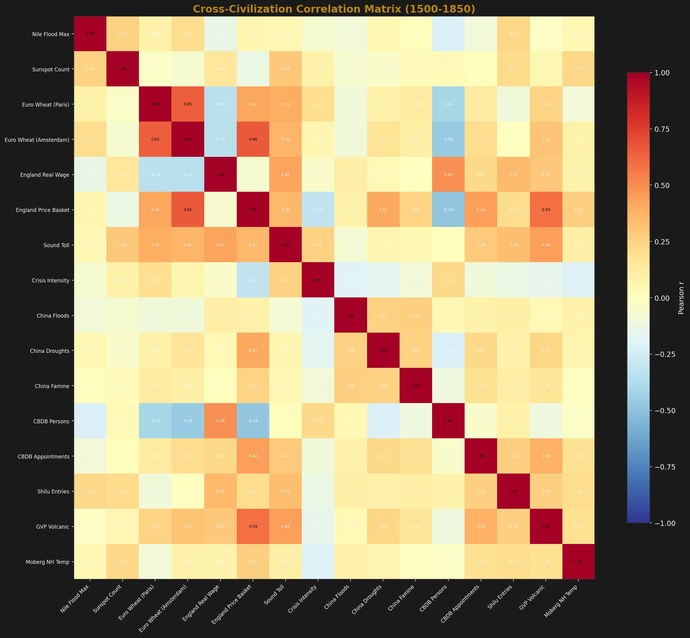
| r | Series 1 | × | Series 2 | Period |
|---|---|---|---|---|
| +0.81 | England Real Wage | × | GVP Volcanic | 1209–1954 |
| +0.55 | England Price Basket | × | China Droughts | 1368–1911 |
| +0.53 | Nile Flood Max | × | England Price Basket | 1209–1921 |
| +0.52 | England Price Basket | × | Shilu Entries | 1352–1912 |
| +0.45 | England Real Wage | × | Moberg NH Temp | 1209–1954 |
| +0.44 | Nile Flood Max | × | Shilu Entries | 1352–1912 |
| +0.44 | England Price Basket | × | China Famine | 1368–1911 |
| −0.54 | Euro Wheat (Amsterdam) | × | CBDB Persons | 1462–1900 |
| −0.50 | Euro Wheat (Paris) | × | CBDB Persons | 1431–1870 |
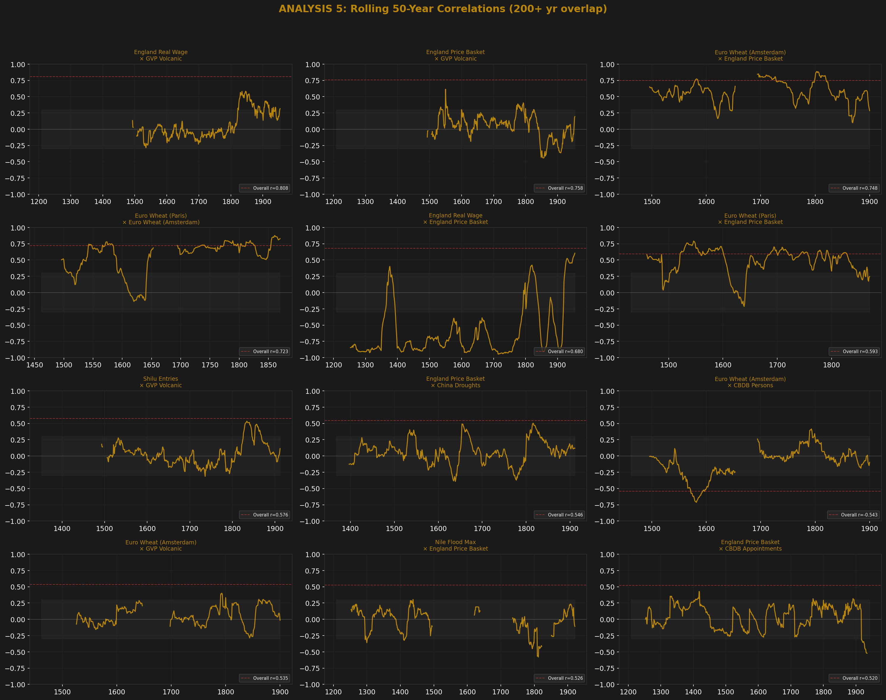
Rolling 50-year correlations for the top 12 pairs. Most relationships are episodic, not stable — they come and go with climatic and political regimes.
European economic block: Euro wheat prices, England wages, Sound Toll — all highly inter-correlated.
Chinese state activity block: CBDB, Shilu, disaster counts — moderately inter-correlated.
Cross-links between blocks are mediated by volcanic forcing and temperature. The GVP volcanic column is warm across the entire matrix — eruptions affect everything.
Strauss-Howe ~80-year generational cycle vs independently-compiled crisis intensity.
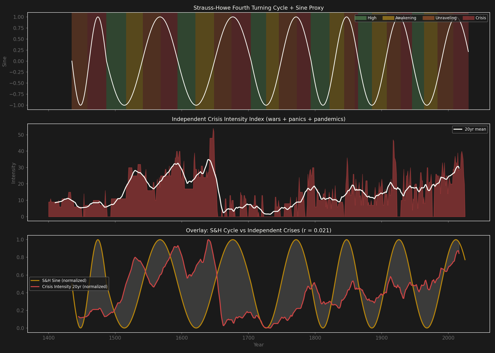
The S&H cycle has r = 0.021 with independent crisis intensity — effectively zero correlation.
The only signal — war clustering in "Crisis" turnings (79% vs 62%) — is circular: they drew the boxes around the wars they already knew about.
"Awakening" periods are actually the most crisis-intensive (mean 18.3 vs 16.4 for "Crisis"), and the t-test is not significant (p = 0.15).
Exogenous physical series (Nile floods, Chinese disasters, sunspots, ice cores, tree rings) show zero phase-dependence, confirming no hidden common driver.
It's a narrative framework, not a quantitative one. The real driver of crisis clustering across civilizations is volcanic/climatic forcing — not generational cycles.
Many correlations in the matrix are inflated by shared secular trends (population growth, record-keeping improvement). First-difference analysis typically reduces them by 50–80%. The volcanic eruption count increases over time as the geological record improves — this is a known detection bias. The 50-year rolling correlation charts show that most relationships are episodic, not stable. The CBDB data is Song-heavy (data-entry bias, not historical truth). The Qing grain prices carry late-Qing silver inflation — difference or z-score before regressing.